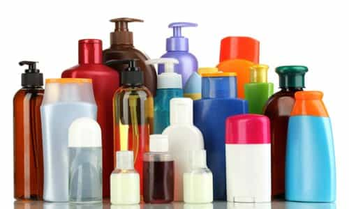
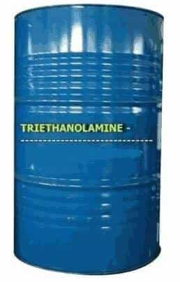
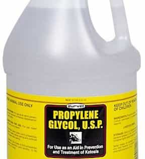
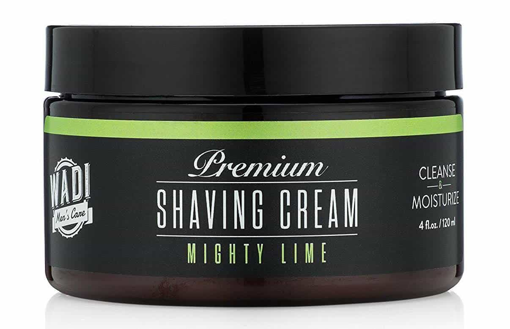

Sponsored Article is ROK's official account that publishes sponsored articles from advertisers. If you are interested hiring a sponsored article for your site, product, or service, visit our advertising page.


The following article is sponsored by Wadi Men’s Care.
Shaving cream is something that few men think about, and why would they? You rub it on your face whenever you shave, wash it off, and that’s it. So long as it does its job, who cares?
Well, you should care, because your shaving cream is full of chemicals that are reducing your sperm count, damaging your skin, and hurting your body in other ways. Here are three common chemicals found in men’s shaving cream and how they’re harming your health…

Phthalates are chemicals that are used to make plastic and vinyl more flexible and softer. They are common in a variety of consumer products, from personal beauty and hygiene products such as shampoo, shaving cream, and nail polish to plastic toys, shower curtains, and insecticides.
More importantly, phthalates have been linked to decreased fertility in men. A study showed that men who used shaving cream containing phthalates had lower sperm counts due to the fact that the chemicals interfered with the proteins responsible for creating sperm. Men across the Western world are already suffering from disastrously low sperm counts, which is contributing to low birth rates in these countries.
If your goal is to maintain a healthy sperm count and masculine vitality, it’s clear that consuming products containing phthalates are part of this. If you want to help preserve your little guys, you should switch to an organic shaving cream that lacks these chemicals.

Another common chemical found in shaving cream is triethanolamine. Triethanolamine is a viscous organic compound that is used to create mustard gas bombs. It is quite common in personal hygiene and beauty products, including moisturizers and shampoos, due to its effectiveness as a pH balancer. It is also used in mixing cement.
Triethanolamine has been demonstrated to have damaging effects on the skin and body. Studies have linked triethanolamine to various skin allergies, and studies on mice also suggest that it is linked to cancer as well, though this is not conclusive.
When you use shaving creams made from triethanolamine, you are literally rubbing a chemical used to make poison bombs on your skin. Do you really want such a toxic substance in contact with your body? If the answer is no, you should consider switching to a brand of shaving cream that doesn’t run the risk of giving you cancer.

Finally, most commercial shaving creams contain surfactants and propylene glycol. Surfactants are substances that are responsible for lowering surface tension between liquids and solids, and propylene glycol is a colorless liquid used to create polymers. Both are used in shaving cream in order to help give it its unique texture and make it adhere to the skin more easily.
Like the above-mentioned substances, surfactant chemicals and propylene glycol have adverse effects on the human body. Surfactants have been shown to destroy the skin’s natural ability to hydrate, drying it out and causing it to age more quickly. When combined with other factors that can damage the skin, such as sun exposure, your shaving cream may cause you to look older than you actually are.
As for propylene glycol, it has been linked to a large number of health ailments, from eczema and asthma to kidney problems and skin allergies. This is on top of the health problems that the other chemicals in your shaving cream can cause. Why risk your health by using these dangerous substances?

If you’re looking for a shaving cream that doesn’t contain chemicals used to make poison gas and antifreeze, we heartily recommend Wadi. Wadi specializes in organic skin and shaving products for men, as a growing number of men are searching for hygiene products that allow them to maintain their health and strength in a world full of emasculating chemicals.
Wadi’s premium shaving cream uses carefully sourced natural and organic plant-based ingredients, lacking dangerous substances that can impact your health. It’s designed for skin of all types, meaning that no matter your age or background, you can use it to drastically improve your shaving experience.
Even better, Wadi shaving cream contains a built-in moisturizer, revitalizing your skin as you shave. This stands in stark contrast to mainstream shaving creams, which dry your skin out with repeated use. Wadi also eschews the use of fragrance oils, as they too are full of dangerous chemicals, instead using natural lime oil to give your freshly-shaved face a pleasant, natural smell.
Finally, Wadi’s shaving cream is barbershop-quality but without creating a mess or taking too much time to use. You won’t need a bowl or a brush in order to get the closest shave. Wadi’s shaving cream is brushless and allows you to shave quickly and easily, allowing you to get on with your day with a minimum of fussing.
Masculinity is under assault in the West in every conceivable fashion, including on a dietary and chemical level. The chemicals contained in everything from our hygiene products to our food to the plastic containers we use to store things are full of substances that are decreasing our fertility and turning us into logy, skinnyfat soyboys.
By using products that are organic and lack these chemicals, you can take back your manhood and improve your health. Traditional shaving creams are full of these substances and are one of the many things that are hurting your health. By using organic products such as Wadi’s, you can curtail the assault on your masculinity. Click here to learn more on their Amazon store.
Also, if you sign up to join their men cave, you’ll receive a free eBook on how to master the art of shaving plus 50% off on your first order. Click here to sign up.